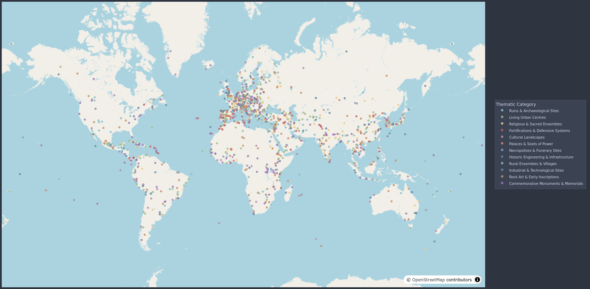
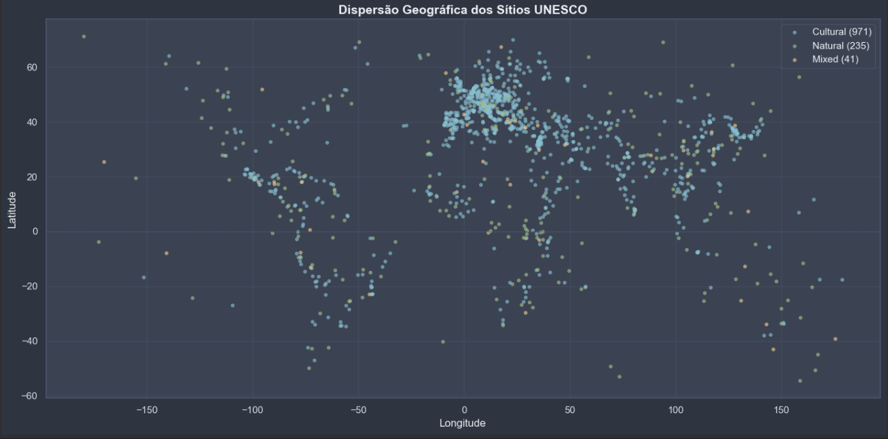
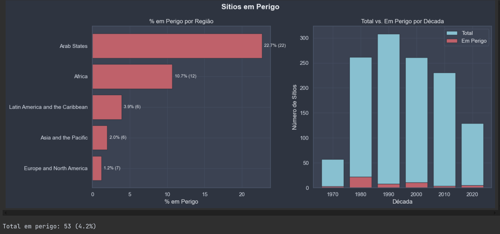
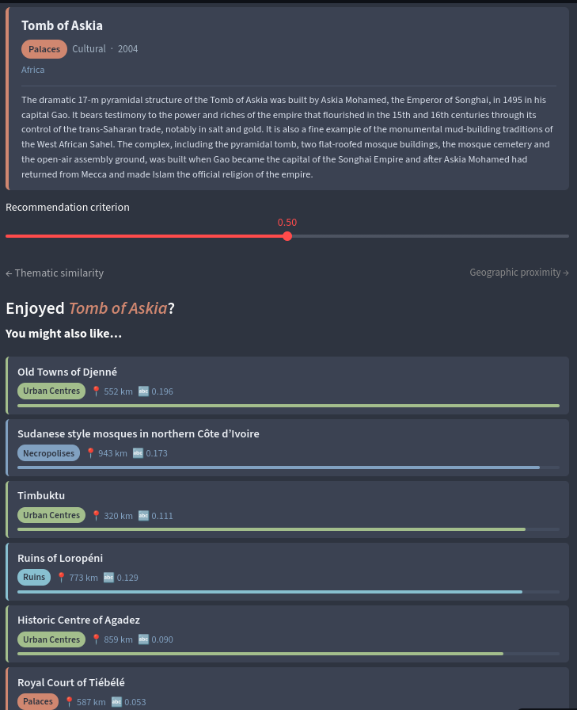

Análise e modelagem dos Sítios do Patrimônio Mundial da UNESCO
Criei um dashboard com os sítios clusterizados, onde o usuário pode identificar sítios semelhantes por proximidade geográfica ou temática

O projeto nasceu de uma curiosidade simples: o que os 1.248 sítios inscritos na Lista do Patrimônio Mundial da UNESCO têm em comum entre si? O dataset cobre 54 colunas, desde coordenadas geográficas e ano de inscrição até descrições textuais em múltiplos idiomas e os critérios de valor universal excepcional que justificaram cada inscrição. A primeira etapa foi uma análise exploratória que resultou na remoção de 20 colunas multilíngues redundantes e outras colunas não úteis para o objetivo, bem como na engenharia de features derivadas: granularidade temporal a partir de date_inscribed, contagem de critérios culturais e naturais por parse de string, coordenadas numéricas extraídas de um campo de texto composto e um campo full_text consolidando as descrições em inglês para uso no pipeline de NLP.
A segunda fase introduziu similaridade semântica entre sítios via vetorização TF-IDF. O TfidfVectorizer foi configurado com ngram_range=(1, 2), sublinear_tf=True, max_features=8.000 e min_df=2, produzindo uma matriz esparsa de 1.247 × 8.000 termos. A similaridade entre pares de sítios foi calculada via linear_kernel (equivalente ao cosseno, porém mais eficiente para matrizes esparsas) e a similaridade entre regiões foi obtida pelo vetor TF-IDF médio por região seguido de cosine_similarity, exposta em um heatmap.


O clustering geográfico foi conduzido com DBSCAN após o descarte do KMeans, que produziu sistematicamente apenas k=2 classes — o silhouette score favorecia divisão binária sobre latitude/longitude, sem valor interpretativo. A implementação com KMeans descartada, o DBSCAN foi configurado com metric="haversine" e algorithm="ball_tree", exigindo que as coordenadas fossem convertidas para radianos antes do ajuste. O valor de eps (0,05 rad ≈ 318 km) foi selecionado pelo método do cotovelo aplicado ao gráfico k-distâncias com k=5, evitando o problema da versão inicial em que um eps estimado automaticamente pela segunda derivada era demasiado alto para dados geograficamente dispersos, colapsando todos os pontos em um único cluster. Variantes multivariada e temática via NLP foram avaliadas e descartadas por não produzirem estrutura interpretável.

A classificação temática representou a etapa de maior valor analítico do projeto. Observei que as três categorias nativas da UNESCO (Cultural, Natural e Mixed) são insuficientes para capturar a diversidade tipológica dos sítios; um complexo de ruínas mesopotâmicas e um centro histórico habitado pertencem ambos à categoria "Cultural", mas são experiências radicalmente distintas. A solução adotada foi prototype matching: 12 categorias temáticas foram definidas (Ruins & Archaeological Sites, Living Urban Centres, Religious & Sacred Ensembles, entre outras), cada uma representada por um parágrafo-protótipo em inglês. Esses protótipos foram transformados pelo mesmo TfidfVectorizer já ajustado na fase anterior, produzindo uma matriz de similaridade cosseno de dimensão 1.247 × 12. A categoria primária de cada sítio é o argmax da linha; atribuições multi-label usam limiar de 0.05, permitindo capturar sítios com perfil híbrido.
O produto final é um dashboard interativo construído com Streamlit e Plotly Express. O mapa scatter_map com mapbox_style="open-street-map" exibe os 1.247 sítios coloridos pelas 12 categorias temáticas. A seleção de um marcador via on_select="rerun" persiste no st.session_state e renderiza um painel lateral com o card do sítio e uma lista de 10 recomendações cujo score combina proximidade geográfica (haversine invertido e normalizado) e similaridade NLP (TF-IDF cosseno normalizado) via score = geo_weight × geo_score + (1 − geo_weight) × nlp_norm, com geo_weight ajustável por slider em tempo real.
O projeto foi estruturado como um pacote Python instalável em src/unesco_sites/, com separação clara entre carregamento de dados (loader.py), modelagem (similarity.py, recommender.py) e orquestração (pipeline.py), este último retornando um PipelineState tipado que o dashboard consome via @st.cache_resource.